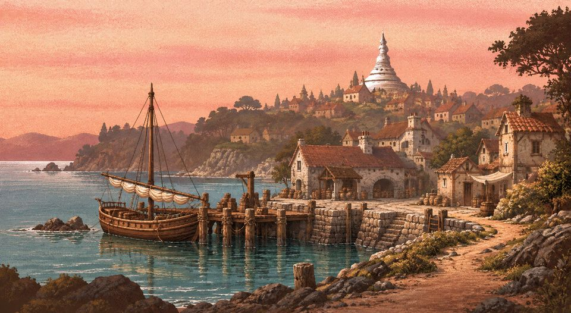
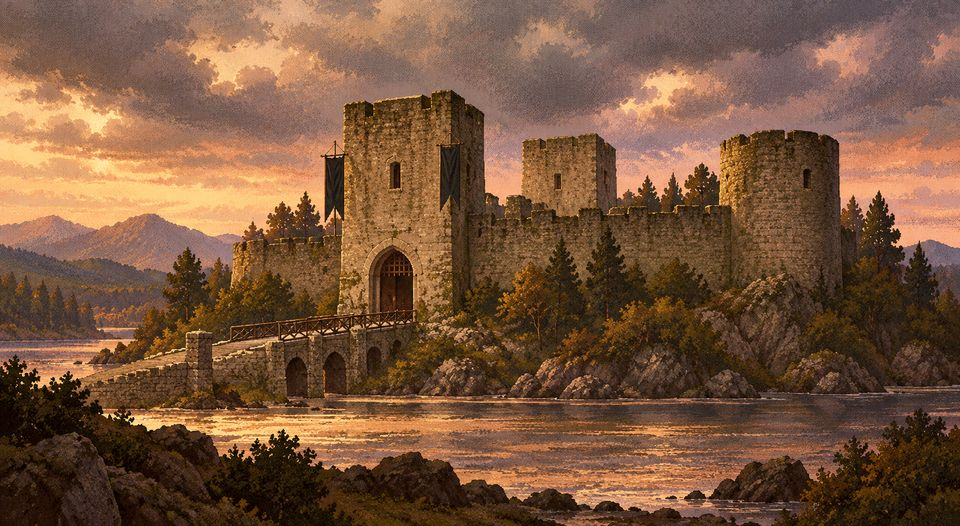
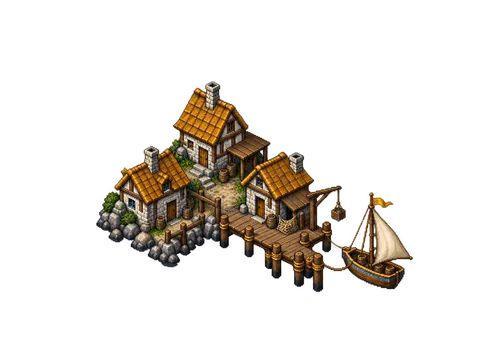
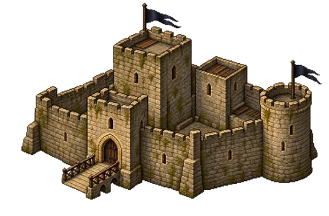

Art and music
A plugin may bring pictures for its panes, sprites for its two markers on the map, and one music track. The game decodes each from its bytes in memory; none is ever imported as a resource.
Pictures
PNG, JPEG or WebP files, at most 4,096 pixels a side, whose first bytes say the same kind as the extension. With the other files, a plugin holds at most 512 files and 32 MiB. The allowed extensions, for every file:
.json.txt.md.png.jpg.jpeg.webp.ogg
Picture keys
Panes name pictures by key. places.json’s pictures maps each key to a file of the plugin, and every key begins with the plugin’s id and _, so two plugins never collide:
{
"refuge_harbor": "art/refuge_harbor.png",
"refuge_castle": "art/refuge_castle.png"
}A marker’s picture, a pane’s picture and quests.json’s pictures (the quest, rewards and result panes) take such a key, or one of the skin’s own pictures, drawn from the player’s skin:
visit_cityvisit_villagevisit_dungeonvisit_wisemanvisit_newsvisit_buycardsvisit_castle_blackvisit_castle_bluevisit_castle_greenvisit_castle_redvisit_castle_whitevisit_lair_blackvisit_lair_bluevisit_lair_greenvisit_lair_redvisit_lair_white
Pane pictures
A pane shows its picture in a 512 × 280 frame, scaled between 0.6 and 1.5 times to the window, and the picture is cropped to fill it. Draw at that shape, about 1.83 to 1, and at least 768 × 420 so the largest pane stays sharp; the Refuge’s are 1695 × 928.

refuge_harbor, the port’s pane
refuge_castle, the castle’s paneMap sprites
A marker’s optional sprite is how it stands on the world map: a picture with a transparent background and its width in world pixels (16 to 512; a tile is 128 wide). Without one the marker has no picture on the map.

art/refuge_port_map.png, width 160
art/refuge_castle_map.png, width 192The pictures above are trimmed copies, made small for this guide; the plugin’s own are 1452 × 1083 and 1536 × 1024.
Pennants
A marker’s banner flies a pennant of its color over it while its flag is set; anchor is the pennant’s offset in the tile’s box (default 108, −24) and size its size (default 18 × 24). A quest’s banner color flies over its giver town once the quest is done. Pennants are redrawn by the effect refresh_appearance and whenever the hero lands.
{
"flag": "liberated",
"color": "e0bc60",
"anchor": [86, -104],
"size": [24, 32]
}Music
world.json’s music names an Ogg Vorbis file of the plugin, at most 16 MiB. It loops while the hero walks the island; the mainland’s music plays everywhere else, and duels keep the game’s own. A file named .ogg that is not Vorbis (Opus, say) refuses the plugin. The Refuge has no track of its own.
"music": "music/my_isle_waves.ogg"What a plugin may carry
A plugin never carries card art, pictures of cards, or anything taken from the 1997 game or a skin. Draw your own, or use work whose license lets you share it, and say so in LICENSE.txt. The skin pictures above are named, not shipped: each player’s own skin draws them.